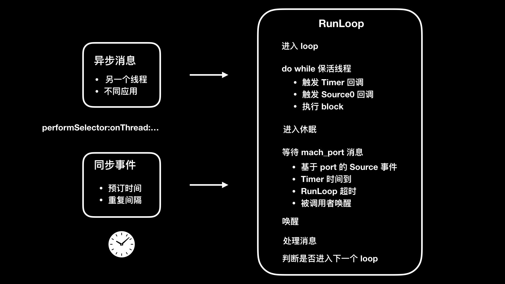

- 00 开篇词 锚定一个点，然后在这个点上深耕.md.html
- 01 建立你自己的iOS开发知识体系.md.html
- 02 App 启动速度怎么做优化与监控？.md.html
- 03 Auto Layout 是怎么进行自动布局的，性能如何？.md.html
- 04 项目大了人员多了，架构怎么设计更合理？.md.html
- 05 链接器：符号是怎么绑定到地址上的？.md.html
- 06 App 如何通过注入动态库的方式实现极速编译调试？.md.html
- 07 Clang、Infer 和 OCLint ，我们应该使用谁来做静态分析？.md.html
- 08 如何利用 Clang 为 App 提质？.md.html
- 09 无侵入的埋点方案如何实现？.md.html
- 10 包大小：如何从资源和代码层面实现全方位瘦身？.md.html
- 11 热点问题答疑（一）：基础模块问题答疑.md.html
- 12 iOS 崩溃千奇百怪，如何全面监控？.md.html
- 13 如何利用 RunLoop 原理去监控卡顿？.md.html
- 14 临近 OOM，如何获取详细内存分配信息，分析内存问题？.md.html
- 15 日志监控：怎样获取 App 中的全量日志？.md.html
- 16 性能监控：衡量 App 质量的那把尺.md.html
- 17 远超你想象的多线程的那些坑.md.html
- 18 怎么减少 App 电量消耗？.md.html
- 19 热点问题答疑（二）：基础模块问题答疑.md.html
- 20 iOS开发的最佳学习路径是什么？.md.html
- 21 除了 Cocoa，iOS还可以用哪些 GUI 框架开发？.md.html
- 22 细说 iOS 响应式框架变迁，哪些思想可以为我所用？.md.html
- 23 如何构造酷炫的物理效果和过场动画效果？.md.html
- 24 A_B 测试：验证决策效果的利器.md.html
- 25 怎样构建底层的发布和订阅事件总线？.md.html
- 26 如何提高 JSON 解析的性能？.md.html
- 27 如何用 Flexbox 思路开发？跟自动布局比，Flexbox 好在哪？.md.html
- 28 怎么应对各种富文本表现需求？.md.html
- 29 如何在 iOS 中进行面向测试驱动开发和面向行为驱动开发？.md.html
- 30 如何制定一套适合自己团队的 iOS 编码规范？.md.html
- 31 iOS 开发学习资料和书单推荐.md.html
- 32 热点问题答疑（三）.md.html
- 33 iOS 系统内核 XNU：App 如何加载？.md.html
- 34 iOS 黑魔法 Runtime Method Swizzling 背后的原理.md.html
- 35 libffi：动态调用和定义 C 函数.md.html
- 36 iOS 是怎么管理内存的？.md.html
- 37 如何编写 Clang 插件？.md.html
- 38 热点问题答疑（四）.md.html
- 39 打通前端与原生的桥梁：JavaScriptCore 能干哪些事情？.md.html
- 40 React Native、Flutter 等，这些跨端方案怎么选？.md.html
- 41 原生布局转到前端布局，开发思路有哪些转变？.md.html
- 42 iOS原生、大前端和Flutter分别是怎么渲染的？.md.html
- 43 剖析使 App 具有动态化和热更新能力的方案.md.html
- 用户故事 我是如何学习这个专栏的？.md.html
- 结束语 慢几步，深几度.md.html
- 捐赠
13 如何利用 RunLoop 原理去监控卡顿？
你好，我是戴铭。今天，我来和你说说如何监控卡顿。
卡顿问题，就是在主线程上无法响应用户交互的问题。如果一个 App 时不时地就给你卡一下，有时还长时间无响应，这时你还愿意继续用它吗？所以说，卡顿问题对App的伤害是巨大的，也是我们必须要重点解决的一个问题。
现在，我们先来看一下导致卡顿问题的几种原因：
- 复杂 UI 、图文混排的绘制量过大；
- 在主线程上做网络同步请求；
- 在主线程做大量的IO 操作；
- 运算量过大，CPU持续高占用；
- 死锁和主子线程抢锁。
那么，我们如何监控到什么时候会出现卡顿呢？是要监视 FPS 吗？
以前，我特别喜欢一本叫作《24格》的杂志，它主要介绍的是动画片制作的相关内容。那么，它为啥叫24格呢？这是因为，动画片中1秒钟会用到24张图片，这样肉眼看起来就是流畅的。
FPS 是一秒显示的帧数，也就是一秒内画面变化数量。如果按照动画片来说，动画片的 FPS 就是24，是达不到60满帧的。也就是说，对于动画片来说，24帧时虽然没有60帧时流畅，但也已经是连贯的了，所以并不能说24帧时就算是卡住了。
由此可见，简单地通过监视 FPS 是很难确定是否会出现卡顿问题了，所以我就果断弃了通过监视FPS 来监控卡顿的方案。
那么，我们到底应该使用什么方案来监控卡顿呢？
RunLoop 原理
对于iOS开发来说，监控卡顿就是要去找到主线程上都做了哪些事儿。我们都知道，线程的消息事件是依赖于NSRunLoop 的，所以从NSRunLoop入手，就可以知道主线程上都调用了哪些方法。我们通过监听 NSRunLoop 的状态，就能够发现调用方法是否执行时间过长，从而判断出是否会出现卡顿。
所以，我推荐的监控卡顿的方案是：通过监控 RunLoop 的状态来判断是否会出现卡顿。
RunLoop是iOS开发中的一个基础概念，为了帮助你理解并用好这个对象，接下来我会先和你介绍一下它可以做哪些事儿，以及它为什么可以做成这些事儿。
RunLoop这个对象，在 iOS 里由CFRunLoop实现。简单来说，RunLoop 是用来监听输入源，进行调度处理的。这里的输入源可以是输入设备、网络、周期性或者延迟时间、异步回调。RunLoop 会接收两种类型的输入源：一种是来自另一个线程或者来自不同应用的异步消息；另一种是来自预订时间或者重复间隔的同步事件。
RunLoop 的目的是，当有事件要去处理时保持线程忙，当没有事件要处理时让线程进入休眠。所以，了解 RunLoop 原理不光能够运用到监控卡顿上，还可以提高用户的交互体验。通过将那些繁重而不紧急会大量占用 CPU 的任务（比如图片加载），放到空闲的 RunLoop 模式里执行，就可以避开在 UITrackingRunLoopMode 这个 RunLoop 模式时是执行。UITrackingRunLoopMode 是用户进行滚动操作时会切换到的 RunLoop 模式，避免在这个 RunLoop 模式执行繁重的 CPU 任务，就能避免影响用户交互操作上体验。
接下来，我就通过 CFRunLoop 的源码来跟你分享下 RunLoop 的原理吧。
第一步
通知 observers：RunLoop 要开始进入 loop 了。紧接着就进入 loop。代码如下：
//通知 observers
if (currentMode->_observerMask & kCFRunLoopEntry )
__CFRunLoopDoObservers(runloop, currentMode, kCFRunLoopEntry);
//进入 loop
result = __CFRunLoopRun(rl, currentMode, seconds, returnAfterSourceHandled, previousMode);
第二步
开启一个 do while 来保活线程。通知 Observers：RunLoop 会触发 Timer 回调、Source0 回调，接着执行加入的 block。代码如下：
// 通知 Observers RunLoop 会触发 Timer 回调
if (currentMode->_observerMask & kCFRunLoopBeforeTimers)
__CFRunLoopDoObservers(runloop, currentMode, kCFRunLoopBeforeTimers);
// 通知 Observers RunLoop 会触发 Source0 回调
if (currentMode->_observerMask & kCFRunLoopBeforeSources)
__CFRunLoopDoObservers(runloop, currentMode, kCFRunLoopBeforeSources);
// 执行 block
__CFRunLoopDoBlocks(runloop, currentMode);
接下来，触发 Source0 回调，如果有 Source1 是 ready 状态的话，就会跳转到 handle_msg去处理消息。代码如下：
if (MACH_PORT_NULL != dispatchPort ) {
Boolean hasMsg = __CFRunLoopServiceMachPort(dispatchPort, &msg)
if (hasMsg) goto handle_msg;
}
第三步
回调触发后，通知 Observers：RunLoop的线程将进入休眠（sleep）状态。代码如下：
Boolean poll = sourceHandledThisLoop || (0ULL == timeout_context->termTSR);
if (!poll && (currentMode->_observerMask & kCFRunLoopBeforeWaiting)) {
__CFRunLoopDoObservers(runloop, currentMode, kCFRunLoopBeforeWaiting);
}
第四步
进入休眠后，会等待 mach_port 的消息，以再次唤醒。只有在下面四个事件出现时才会被再次唤醒：
- 基于 port 的 Source 事件；
- Timer 时间到；
- RunLoop 超时；
- 被调用者唤醒。
等待唤醒的代码如下：
do {
__CFRunLoopServiceMachPort(waitSet, &msg, sizeof(msg_buffer), &livePort) {
// 基于 port 的 Source 事件、调用者唤醒
if (modeQueuePort != MACH_PORT_NULL && livePort == modeQueuePort) {
break;
}
// Timer 时间到、RunLoop 超时
if (currentMode->_timerFired) {
break;
}
} while (1);
第五步
唤醒时通知 Observer：RunLoop 的线程刚刚被唤醒了。代码如下：
if (!poll && (currentMode->_observerMask & kCFRunLoopAfterWaiting))
__CFRunLoopDoObservers(runloop, currentMode, kCFRunLoopAfterWaiting);
第六步
RunLoop 被唤醒后就要开始处理消息了：
- 如果是 Timer 时间到的话，就触发 Timer 的回调；
- 如果是 dispatch 的话，就执行 block；
- 如果是 source1事件的话，就处理这个事件。
消息执行完后，就执行加到 loop 里的 block。代码如下：
handle_msg:
// 如果 Timer 时间到，就触发 Timer 回调
if (msg-is-timer) {
__CFRunLoopDoTimers(runloop, currentMode, mach_absolute_time())
}
// 如果 dispatch 就执行 block
else if (msg_is_dispatch) {
__CFRUNLOOP_IS_SERVICING_THE_MAIN_DISPATCH_QUEUE__(msg);
}
// Source1 事件的话，就处理这个事件
else {
CFRunLoopSourceRef source1 = __CFRunLoopModeFindSourceForMachPort(runloop, currentMode, livePort);
sourceHandledThisLoop = __CFRunLoopDoSource1(runloop, currentMode, source1, msg);
if (sourceHandledThisLoop) {
mach_msg(reply, MACH_SEND_MSG, reply);
}
}
第七步
根据当前 RunLoop 的状态来判断是否需要走下一个 loop。当被外部强制停止或loop 超时时，就不继续下一个 loop 了，否则继续走下一个 loop 。代码如下：
if (sourceHandledThisLoop && stopAfterHandle) {
// 事件已处理完
retVal = kCFRunLoopRunHandledSource;
} else if (timeout) {
// 超时
retVal = kCFRunLoopRunTimedOut;
} else if (__CFRunLoopIsStopped(runloop)) {
// 外部调用者强制停止
retVal = kCFRunLoopRunStopped;
} else if (__CFRunLoopModeIsEmpty(runloop, currentMode)) {
// mode 为空，RunLoop 结束
retVal = kCFRunLoopRunFinished;
}
整个 RunLoop 过程，我们可以总结为如下所示的一张图片。- 
这里只列出了 CFRunLoop 的关键代码，你可以点击这个链接查看完整代码。
loop 的六个状态
通过对RunLoop原理的分析，我们可以看出在整个过程中，loop的状态包括6个，其代码定义如下：
typedef CF_OPTIONS(CFOptionFlags, CFRunLoopActivity) {
kCFRunLoopEntry , // 进入 loop
kCFRunLoopBeforeTimers , // 触发 Timer 回调
kCFRunLoopBeforeSources , // 触发 Source0 回调
kCFRunLoopBeforeWaiting , // 等待 mach_port 消息
kCFRunLoopAfterWaiting ), // 接收 mach_port 消息
kCFRunLoopExit , // 退出 loop
kCFRunLoopAllActivities // loop 所有状态改变
}
如果RunLoop的线程，进入睡眠前方法的执行时间过长而导致无法进入睡眠，或者线程唤醒后接收消息时间过长而无法进入下一步的话，就可以认为是线程受阻了。如果这个线程是主线程的话，表现出来的就是出现了卡顿。
所以，如果我们要利用RunLoop原理来监控卡顿的话，就是要关注这两个阶段。RunLoop在进入睡眠之前和唤醒后的两个 loop 状态定义的值，分别是 kCFRunLoopBeforeSources 和 kCFRunLoopAfterWaiting ，也就是要触发 Source0 回调和接收 mach_port 消息两个状态。
接下来，我们就一起分析一下，如何对loop的这两个状态进行监听，以及监控的时间值如何设置才合理。
如何检查卡顿？
要想监听 RunLoop，你就首先需要创建一个 CFRunLoopObserverContext 观察者，代码如下：
CFRunLoopObserverContext context = {0,(__bridge void*)self,NULL,NULL};
runLoopObserver = CFRunLoopObserverCreate(kCFAllocatorDefault,kCFRunLoopAllActivities,YES,0,&runLoopObserverCallBack,&context);
将创建好的观察者 runLoopObserver 添加到主线程 RunLoop 的 common 模式下观察。然后，创建一个持续的子线程专门用来监控主线程的 RunLoop 状态。
一旦发现进入睡眠前的 kCFRunLoopBeforeSources 状态，或者唤醒后的状态 kCFRunLoopAfterWaiting，在设置的时间阈值内一直没有变化，即可判定为卡顿。接下来，我们就可以 dump 出堆栈的信息，从而进一步分析出具体是哪个方法的执行时间过长。
开启一个子线程监控的代码如下：
//创建子线程监控
dispatch_async(dispatch_get_global_queue(0, 0), ^{
//子线程开启一个持续的 loop 用来进行监控
while (YES) {
long semaphoreWait = dispatch_semaphore_wait(dispatchSemaphore, dispatch_time(DISPATCH_TIME_NOW, 3 * NSEC_PER_SEC));
if (semaphoreWait != 0) {
if (!runLoopObserver) {
timeoutCount = 0;
dispatchSemaphore = 0;
runLoopActivity = 0;
return;
}
//BeforeSources 和 AfterWaiting 这两个状态能够检测到是否卡顿
if (runLoopActivity == kCFRunLoopBeforeSources || runLoopActivity == kCFRunLoopAfterWaiting) {
//将堆栈信息上报服务器的代码放到这里
} //end activity
}// end semaphore wait
timeoutCount = 0;
}// end while
});
代码中的 NSEC_PER_SEC，代表的是触发卡顿的时间阈值，单位是秒。可以看到，我们把这个阈值设置成了3秒。那么，这个3秒的阈值是从何而来呢？这样设置合理吗？
其实，触发卡顿的时间阈值，我们可以根据 WatchDog 机制来设置。WatchDog 在不同状态下设置的不同时间，如下所示：
- 启动（Launch）：20s；
- 恢复（Resume）：10s；
- 挂起（Suspend）：10s；
- 退出（Quit）：6s；
- 后台（Background）：3min（在iOS 7之前，每次申请10min； 之后改为每次申请3min，可连续申请，最多申请到10min）。
通过WatchDog 设置的时间，我认为可以把启动的阈值设置为10秒，其他状态则都默认设置为3秒。总的原则就是，要小于 WatchDog的限制时间。当然了，这个阈值也不用小得太多，原则就是要优先解决用户感知最明显的体验问题。
如何获取卡顿的方法堆栈信息？
子线程监控发现卡顿后，还需要记录当前出现卡顿的方法堆栈信息，并适时推送到服务端供开发者分析，从而解决卡顿问题。那么，在这个过程中，如何获取卡顿的方法堆栈信息呢？
获取堆栈信息的一种方法是直接调用系统函数。这种方法的优点在于，性能消耗小。但是，它只能够获取简单的信息，也没有办法配合 dSYM 来获取具体是哪行代码出了问题，而且能够获取的信息类型也有限。这种方法，因为性能比较好，所以适用于观察大盘统计卡顿情况，而不是想要找到卡顿原因的场景。
直接调用系统函数方法的主要思路是：用 signal 进行错误信息的获取。具体代码如下：
static int s_fatal_signals[] = {
SIGABRT,
SIGBUS,
SIGFPE,
SIGILL,
SIGSEGV,
SIGTRAP,
SIGTERM,
SIGKILL,
};
static int s_fatal_signal_num = sizeof(s_fatal_signals) / sizeof(s_fatal_signals[0]);
void UncaughtExceptionHandler(NSException *exception) {
NSArray *exceptionArray = [exception callStackSymbols]; //得到当前调用栈信息
NSString *exceptionReason = [exception reason]; //非常重要，就是崩溃的原因
NSString *exceptionName = [exception name]; //异常类型
}
void SignalHandler(int code)
{
NSLog(@"signal handler = %d",code);
}
void InitCrashReport()
{
//系统错误信号捕获
for (int i = 0; i < s_fatal_signal_num; ++i) {
signal(s_fatal_signals[i], SignalHandler);
}
//oc未捕获异常的捕获
NSSetUncaughtExceptionHandler(&UncaughtExceptionHandler);
}
int main(int argc, char * argv[]) {
@autoreleasepool {
InitCrashReport();
return UIApplicationMain(argc, argv, nil, NSStringFromClass([AppDelegate class]));
另一种方法是，直接用 PLCrashReporter这个开源的第三方库来获取堆栈信息。这种方法的特点是，能够定位到问题代码的具体位置，而且性能消耗也不大。所以，也是我推荐的获取堆栈信息的方法。
具体如何使用 PLCrashReporter 来获取堆栈信息，代码如下所示：
// 获取数据
NSData *lagData = [[[PLCrashReporter alloc]
initWithConfiguration:[[PLCrashReporterConfig alloc] initWithSignalHandlerType:PLCrashReporterSignalHandlerTypeBSD symbolicationStrategy:PLCrashReporterSymbolicationStrategyAll]] generateLiveReport];
// 转换成 PLCrashReport 对象
PLCrashReport *lagReport = [[PLCrashReport alloc] initWithData:lagData error:NULL];
// 进行字符串格式化处理
NSString *lagReportString = [PLCrashReportTextFormatter stringValueForCrashReport:lagReport withTextFormat:PLCrashReportTextFormatiOS];
//将字符串上传服务器
NSLog(@"lag happen, detail below: \n %@",lagReportString);
搜集到卡顿的方法堆栈信息以后，就是由开发者来分析并解决卡顿问题了。
在今天这篇文章中，我们用到的从监控卡顿到收集卡顿问题信息的完整代码，你都可以点击这个链接查看。
小结
今天我给你介绍了使用 RunLoop 监控卡顿的方案，我还跟你说了下 RunLoop 的原理，希望能够帮助你更好地理解 RunLoop 监控卡顿的方案。
读到这里你可能会想，为什么要将卡顿监控放到线上做呢？其实这样做主要是为了能够更大范围的收集问题，如果仅仅通过线下收集卡顿的话，场景无法被全面覆盖。因为，总有一些卡顿问题，是由于少数用户的数据异常导致的。
而用户反馈的卡顿问题往往都是说在哪个页面卡住了，而具体是执行哪个方法时卡主了，我们是无从得知的。在碰到这样问题时，你一定会感觉手足无措，心中反问一百遍：“我怎么在这个页面不卡，测试也不卡，就你卡”。而且，通过日志我们也很难查出个端倪。这时候，线上监控卡顿的重要性就凸显出来了。
有时，某个问题看似对 App 的影响不大，但如果这个问题在某个版本中爆发出来了就会变得难以收场。所以，你需要对这样的问题进行有预见性的监控，一方面可以早发现、早解决，另一方面在遇到问题时能够快速定位原因，不至于过于被动。要知道，面对问题的响应速度往往是评判基础建设优劣的一个重要的标准。
以上就是我们今天的内容了。接下来，我想请你回顾一下你都碰到过哪些卡顿问题，又是如何解决的呢？
感谢你的收听，欢迎你在评论区给我留言分享你的观点，也欢迎把它分享给更多的朋友一起阅读。
© 2019 - 2023 Liangliang Lee. Powered by gin and hexo-theme-book.